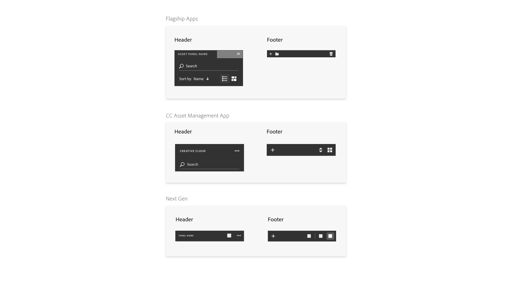

Background
Part 1: Design
Introduction
I was presented with a challenge to design for a consistent asset panel, which is part of the design framework but has not yet been looked into by the team at the time. My work is a preliminary exploration of the design. It starts with a need analysis of the current apps, undergoes three rounds of iterations, delivers solutions along with related problems that the team should take in mind in the future.
Task & Need Analysis
Iteration Process
The design of the asset panel went through three rounds of iterations. The steps are shown below.

↑ Iteration 1. Laying out the elements identified in task analysis in all possible states.
After the first round of iteration, I reviewed the design with three designers from three different product teams. They pointed out that though my design has good considerations of the different needs of the new generation products, I did not follow the latest Adobe Design System guidelines. For example, the list/thumbnail buttons should be displayed side by side rather than combined as one toggle button. They also suggested that I look into some previous design efforts on the asset panel in the flagship product line etc. I was also inspired by the review session to start exploring asset panel on mobile early to ensure a consistenet design on both platforms.
↑ References of other Asset Panel design efforts


↑ Iteration 2. Exploring alternatives to achieve a consistent design across desktop and mobile
After the second round of design and a review session, the team leaned towards the third solution with a footer and a contextual selction bar. One of the feedback was to use a panel name on the header and show the directory below it because there could be multiple asset panels. The team did not arrive on a conclusion about whether there should be a serach bar or a search button; we were also not sure about how to deal with multiple sections in the asset panel. Below is a summary of the third round of design:

↑ Summary of Iteration 3
↑ Introducing design solution to all app scenarios and adapting to specific needs
It occured to us that it would be good time to go back to the real scenarios and see how this design look on the four apps. After trying out the design on all four apps in all possible states, I was able to better identify the design problems concerning the asset panel and describe the pros and cons in a more detailed way. My design exploration and reflections provided a good starting point for the team to make decisions later on.
↑ Identifying problems and comparing solutions
Part 2: Prototype
To test the current framework, I helped prototype a new video-editing app in Framer Studio. I was responsible for building the asset panel component. Since the team was uncertain about some different designs, I built two variations of the prototype (left tool bar vs bottom tool bar on the desktop version; top bar with expanded function icons vs top bar with an ellipsis menu on the mobile version). With the two sets of prototypes we were then able to test out which one works better for our users.
↑ Rush prototype on desktop with tool bar on the bottom
↑ Rush prototype on mobile with expanded function icons
Part 3: Research
During my internship, I also worked with a senior user researcher to conduct research to gain insights into the design framework by testing on a new video-editing app. My job was to find out where the design framework needs to be flexible and where it can be standardized across apps and devices. The Research also investigated target users impressions and expectations of the framework. Findings from this research are used to inform the future direction of the framework as well as future research.
Planning
As the designer who worked directly with the research team, I coordinated with the researcher to come up with a research plan that could meet the needs of both my team and the video-editing app's product team-On one hand, we designed the questions and tasks to gauge the usability of the framework; on the other hand, we probed into user's video eiditing and sharing habits on both desktop and mobile platforms; we also let users walk through four benchmark tasks on the prototype to find out how the new app fit into their workflow.
Methodology & Process


Deliverables
Insights into target user’s workflow and needs
Identified usability issues with the new video-editing app and made recommendations on where to improve
Compared the two layout design and suggested the future direction
Provided five design suggestions on the design framework using low-fi prototypes
Click here to see my reflection on the research on Medium :)